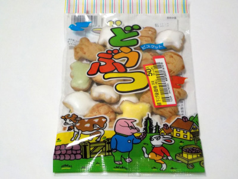

志村菓子堂のどうぶつヨーチ。
更新日 : 2023/12/10

子供向けの砂糖甘いビスケットかなーと思って食べたのですが、砂糖はそれ程甘くなかったです。
普通にちょっと甘くて美味しいビスケットでした。
大人が食べてもいい商品だなと思いました。
埼玉県志木市中宗岡1丁目5-11
更新日 : 2023/12/10

子供向けの砂糖甘いビスケットかなーと思って食べたのですが、砂糖はそれ程甘くなかったです。
普通にちょっと甘くて美味しいビスケットでした。
大人が食べてもいい商品だなと思いました。